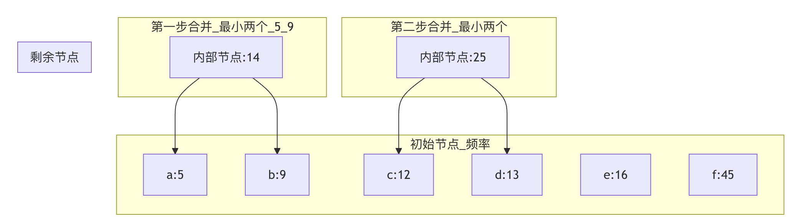

贪心算法
贪心算法（英语：greedy algorithm），又称贪婪算法，是一种在每一步选择中都采取在当前状态下最好或最优（即最有利）的选择，从而希望导致结果是全局最好或最优的算法策略。
贪心算法就像我们常说的只顾眼前利益，并不从整体最优上加以考虑，所做的选择只是在某种意义上的局部最优解。
想象一下，你面前有一堆不同面额的硬币（比如 1 元、5 角、1 角），你需要用最少数量的硬币凑出 1.8 元。
一个很自然的想法是：每次都先拿面额最大的硬币。
先拿 1 元，剩下 0.8 元；再拿 5 角，剩下 0.3 元；最后拿三个 1 角。
整个过程，我们在每一步都做出了当前看来最好的选择，这就是贪心算法的核心思想。
贪心算法就像是一个目光短浅但决策果断的人：
- 每一步选择：在当前状态下做出看起来最优的选择
- 不考虑全局：不考虑这个选择对未来的影响
- 期望结果：希望局部最优选择能导致全局最优解
现实中的案例：
- 找零钱：总是先用最大面额的硬币
- 爬山：总是朝最陡峭的方向前进
- 购物：总是买当前最优惠的商品
- 路线选择：总是选择当前最短的路
贪心算法的特点
- 贪心选择性质：每一步的最优解，都可以由之前各步的局部最优解推导出来。后面的选择不会影响之前的选择。
- 最优子结构：一个问题的最优解包含其子问题的最优解。这是动态规划也具有的性质，但贪心算法在每一步都"贪心地"选择子问题的最优解。
| 特点 | 描述 | 优点 | 缺点 |
|---|---|---|---|
| 局部最优 | 每步选择当前最优解 | 简单直观 | 可能不是全局最优 |
| 不可撤销 | 选择后不能反悔 | 决策快速 | 容易陷入局部最优 |
| 高效性 | 通常时间复杂度低 | 实用性强 | 适用范围有限 |
| 简单实现 | 逻辑清晰易懂 | 易于编码 | 需要证明正确性 |
与动态规划的区别
这是一个初学者容易混淆的点。我们用表格来对比一下：
| 特性 | 贪心算法 | 动态规划 |
|---|---|---|
| 决策依据 | 每一步都做出当前最优选择，不可回退。 | 每一步的选择依赖于子问题的解，会保存中间结果，可比较多种选择。 |
| 最优解保证 | 不一定能得到全局最优解，需要问题本身具有贪心选择性质。 | 通常能得到全局最优解。 |
| 效率 | 高效，通常时间复杂度较低。 | 相对较低，因为需要解决重叠子问题。 |
| 适用场景 | 问题具有贪心选择性质和最优子结构，如 Huffman 编码、最小生成树。 | 问题具有最优子结构和重叠子问题，如背包问题、最短路径。 |
简单来说，动态规划是"谋定而后动"，会为了长远利益牺牲眼前；而贪心算法是"今朝有酒今朝醉"，只追求眼前利益。
贪心算法的基本框架
贪心算法没有固定的代码模板，但其思想可以归结为以下步骤：
- 建立数学模型：将实际问题抽象为数学问题。
- 定义贪心策略：确定每一步选择"最优解"的准则。这是算法的核心和难点。
- 证明贪心策略：证明所定义的贪心策略能导致全局最优解（可选但重要，对于算法题，通常需要理解其正确性）。
- 迭代求解：根据策略，从初始状态开始，一步步做出贪心选择，直到得到问题的解。
一个通用的伪代码框架如下：
实例
# 1. 初始化：可能包括排序、创建结果容器等
solution = []
# 2. 遍历所有可选项，通常需要先按某种规则排序
for item in sorted(problem.items, key=贪心策略规则):
# 3. 贪心选择：如果当前选择满足条件，就采纳它
if is_feasible(solution, item):
solution.append(item)
# 4. 返回最终构造的解
return solution
经典问题与代码示例
让我们通过几个经典问题，来具体感受贪心算法的应用。每个问题我们都将：1）分析问题与贪心策略；2）提供完整代码；3）进行逐行解析。
示例 1：找零钱问题（Coin Change）
问题描述：假设硬币体系为 [100, 50, 20, 10, 5, 1]（单位：分），需要找零amount分，求使用硬币的最少数量。
贪心策略：每次选择面值不超过剩余金额的最大硬币。对于人民币体系，这个策略是有效的。
代码实现：
实例
"""
使用贪心算法解决找零钱问题（针对特定硬币体系）
:param coins: list[int], 硬币面值列表，应降序排列
:param amount: int, 需要找零的总金额
:return: list[int], 使用的硬币面值列表
"""
coins.sort(reverse=True) # 确保硬币按面值从大到小排序
result = [] # 用于存放找零的硬币
remaining = amount # 剩余需要找零的金额
for coin in coins:
# 当当前硬币面值小于等于剩余金额时，就尽可能多地使用它
while remaining >= coin:
result.append(coin)
remaining -= coin # 从剩余金额中扣除当前硬币面值
# 检查是否正好找开
if remaining == 0:
return result
else:
# 对于无法正好找开的情况（虽然在此硬币体系下不会发生）
return None
# 测试数据
test_coins = [100, 50, 20, 10, 5, 1]
test_amount = 186 # 1元8角6分
change = coin_change_greedy(test_coins, test_amount)
print(f"找零 {test_amount} 分，需要硬币：{change}")
print(f"硬币数量：{len(change)} 枚")
# 输出：找零 186 分，需要硬币：[100, 50, 20, 10, 5, 1]
# 硬币数量：6 枚
代码解析：
- 第 8 行：
coins.sort(reverse=True)是贪心策略的关键准备，确保我们总是先考虑大面额硬币。 - 第 12-15 行：
while循环确保只要还能用当前面值的硬币，就继续使用，这实现了"尽可能多"的贪心选择。 - 第 18-22 行：检查最终结果，确保金额正好匹配。
重要提醒：贪心算法解决找零问题并不总是得到最优解！例如，如果硬币体系是 [25, 20, 10, 5, 1]，要凑出 40 分。贪心法会选择 25+10+5（三枚），但最优解是 20+20（两枚）。只有特定货币体系（如人民币）下贪心策略才有效。
示例 2：区间调度问题（Interval Scheduling）
问题描述：给你很多个会议（每个会议有开始和结束时间），如何安排才能使你在一个会议室里能举行的会议数量最多？
贪心策略：每次选择结束时间最早的会议。这样可以为后面留下更多的时间。
代码实现：
实例
"""
解决最大不相交区间问题（区间调度）
:param intervals: list of [start, end], 区间列表
:return: list of [start, end], 被选中的区间列表
"""
# 1. 按结束时间升序排序
intervals_sorted = sorted(intervals, key=lambda x: x[1])
selected = [] # 存放被选中的区间
last_end_time = -float('inf') # 初始化上一个选中区间的结束时间
for interval in intervals_sorted:
start, end = interval
# 2. 贪心选择：如果当前区间的开始时间不早于上一个选中区间的结束时间，则选择它
if start >= last_end_time:
selected.append(interval)
last_end_time = end # 更新最后结束时间
return selected
# 测试数据：每个子列表代表一个会议 [开始时间, 结束时间]
test_intervals = [
[1, 3], [2, 4], [3, 5], [4, 6], [5, 7],
[1, 2], [2, 3], [1, 4]
]
result = interval_scheduling(test_intervals)
print("最多可以安排的会议（按结束时间排序后）：")
for meeting in result:
print(f" 会议 [{meeting[0]}, {meeting[1]}]")
print(f"总计 {len(result)} 个会议")
# 一种可能的输出（因为排序后顺序可能不同，但数量最优）：
# 会议 [1, 2]
# 会议 [2, 3]
# 会议 [3, 5] 或 [4, 6] 等
# 总计 4 个会议
代码解析：
- 第 10 行：
sorted(intervals, key=lambda x: x[1])是实现贪心策略的核心，按结束时间排序。 - 第 16-19 行：
if start >= last_end_time是可行性检查，确保当前会议不与已选会议重叠。 - 这个算法的时间复杂度是 O(n log n)，主要来自排序。
示例 3：霍夫曼编码（Huffman Coding） - 概念与简化实现
霍夫曼编码是一种用于无损数据压缩的贪心算法。其核心思想是：给出现频率高的字符分配较短的编码，出现频率低的字符分配较长的编码。
贪心策略：反复将频率最小的两个节点合并，构建一棵二叉树。
由于完整实现较长，这里展示其核心的贪心合并过程：
实例
class Node:
"""霍夫曼树的节点类"""
def __init__(self, char, freq):
self.char = char # 字符（叶子节点才有）
self.freq = freq # 频率
self.left = None
self.right = None
# 为了能在堆中比较，定义比较方法
def __lt__(self, other):
return self.freq < other.freq
def build_huffman_tree(char_freq):
"""
构建霍夫曼树
:param char_freq: dict, 字符及其频率，如 {'a': 5, 'b': 9, 'c': 12, 'd': 13, 'e': 16, 'f': 45}
:return: Node, 霍夫曼树的根节点
"""
# 1. 初始化：为每个字符创建叶子节点，并放入最小堆（优先队列）
heap = [Node(char, freq) for char, freq in char_freq.items()]
heapq.heapify(heap) # 将列表转换为最小堆
# 2. 贪心合并：当堆中不止一个节点时
while len(heap) > 1:
# 弹出两个频率最小的节点
left = heapq.heappop(heap)
right = heapq.heappop(heap)
# 创建一个新的内部节点，其频率为子节点频率之和
merged = Node(None, left.freq + right.freq)
merged.left = left
merged.right = right
# 将新节点推回堆中
heapq.heappush(heap, merged)
# 堆中剩下的最后一个节点就是霍夫曼树的根节点
return heap[0] if heap else None
# 测试数据
test_freq = {'a': 5, 'b': 9, 'c': 12, 'd': 13, 'e': 16, 'f': 45}
root = build_huffman_tree(test_freq)
print("霍夫曼树构建完成！根节点频率 =", root.freq if root else 0)
# 输出：霍夫曼树构建完成！根节点频率 = 100
算法可视化： 以下图展示了用上述测试数据构建霍夫曼树的前几步合并过程：

图解说明：算法始终从所有可用节点（初始为叶子节点，后续包括内部节点）中选出频率最小的两个进行合并，生成一个新的内部节点。此过程重复，直至形成一棵完整的二叉树。这棵树的叶子节点对应原始字符，从根到叶子的路径（左分支为 0，右分支为 1）即为该字符的霍夫曼编码。
贪心算法的正确性证明
如何判断一个问题能否用贪心算法解决？通常需要证明以下两点：
- 贪心选择性质：可以通过数学归纳法或反证法证明，第一步的最优选择包含在某个全局最优解中。
- 最优子结构：证明在做出第一步贪心选择后，原问题简化为一个规模更小的同类型子问题。
以 区间调度问题为例的证明思路：
- 贪心选择：设所有区间中结束时间最早的是
i。存在一个最优解包含区间i。- 证明：假设某个最优解不包含
i。设该最优解中第一个区间是j。因为i结束最早，所以用i替换j，不会与其他区间冲突，且解的大小不变，因此包含i的解也是最优解。
- 证明：假设某个最优解不包含
- 最优子结构：在选择区间
i后，剩下的问题是在所有与i不重叠的区间中寻找最优解。这构成了一个原问题的子问题。
实践练习
现在，尝试用贪心算法解决以下问题，以巩固你的理解。
练习 1：跳跃游戏
问题：给定一个非负整数数组nums，你最初位于数组的第一个下标。数组中的每个元素代表你在该位置可以跳跃的最大长度。判断你是否能够到达最后一个下标。示例：nums = [2,3,1,1,4]，返回True（从下标 0 跳 1 步到下标 1，再跳 3 步到最后一个下标）。贪心策略提示：不是模拟每一步跳多远，而是维护一个最远可到达位置。
练习 2：分发饼干
问题：有一群孩子和一堆饼干，每个孩子有一个胃口值g[i]，每块饼干有一个尺寸s[j]。只有饼干尺寸 >= 孩子胃口时，孩子才能满足。求最多能满足多少个孩子。示例：g = [1,2,3], s = [1,1]，输出1。
贪心策略提示：为了满足更多孩子，应该用最小的饼干去满足胃口最小的孩子（或者反过来思考）。
练习 3：买卖股票的最佳时机 II
问题：给定一个数组prices，其中prices[i]是一支给定股票第i天的价格。你可以无限次地完成交易（即买卖一支股票），但你不能同时参与多笔交易（必须在再次购买前出售掉之前的股票）。计算你能获得的最大利润。示例：prices = [7,1,5,3,6,4]，输出7（在 1 买 5 卖，利润 4；在 3 买 6 卖，利润 3；总利润 7）。贪心策略提示：利润可以分解为每天的差价。只要今天的价格比昨天高，就把这部分差价算作利润。
点我分享笔记
<p style="font-size:14px;">笔记需要是本篇文章的内容扩展！</p><br> <p style="font-size:12px;"><a href="../tougao.html" target="_blank">文章投稿，可点击这里</a></p> <p style="font-size:14px;"><a href="../w3cnote/runoob-user-test-intro.html" target="_blank">注册邀请码获取方式</a></p> <h3 class="text-muted"><i class="fa fa-info-circle" aria-hidden="true"></i> 分享笔记前必须<a href=";.html" class="runoob-pop">登录</a>！</h3> <p><a href="../w3cnote/runoob-user-test-intro.html" target="_blank">注册邀请码获取方式</a></p>